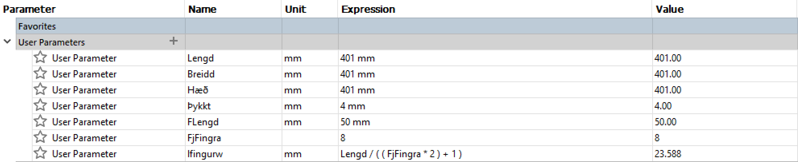
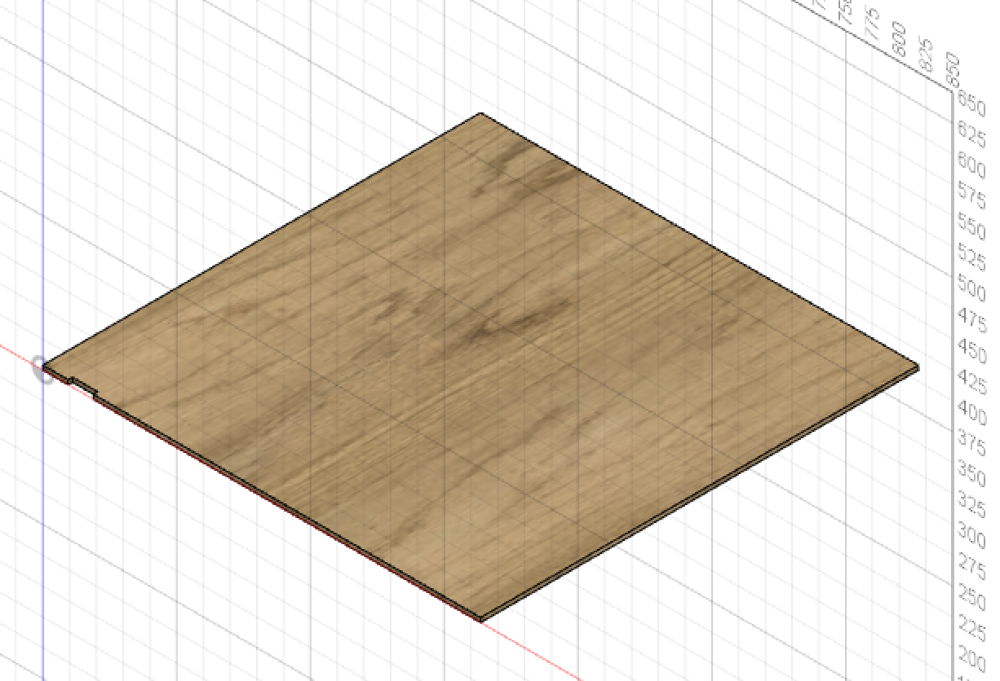
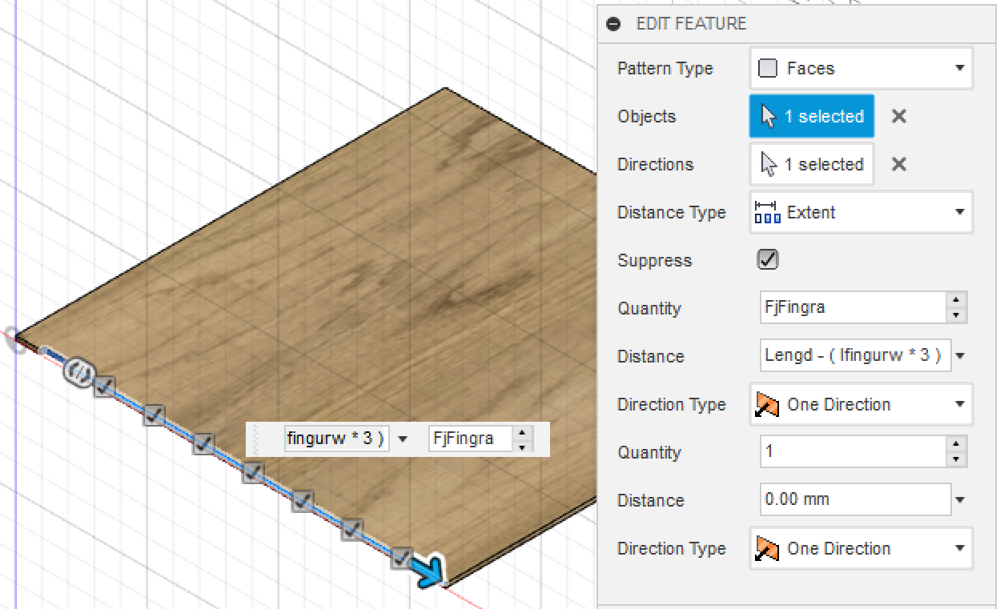
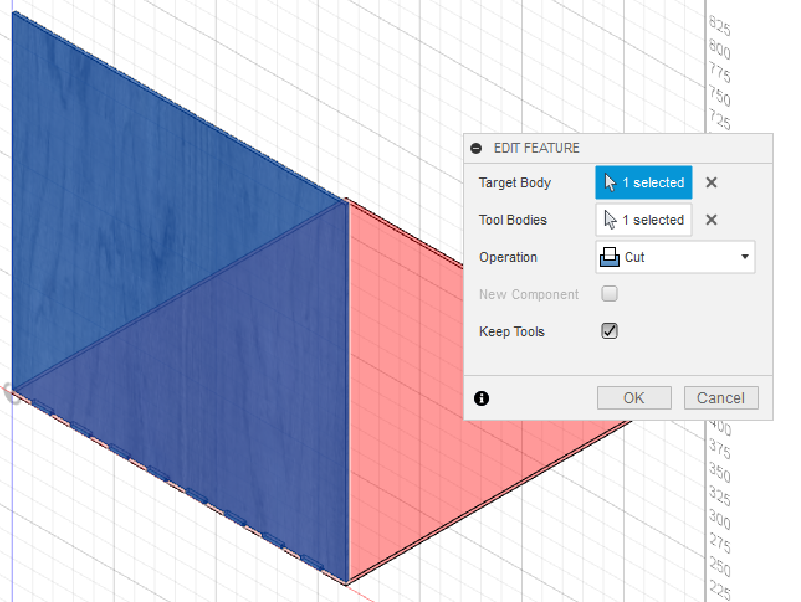
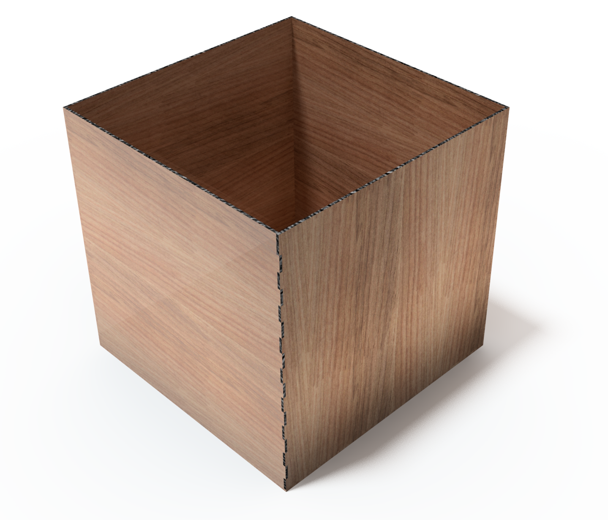
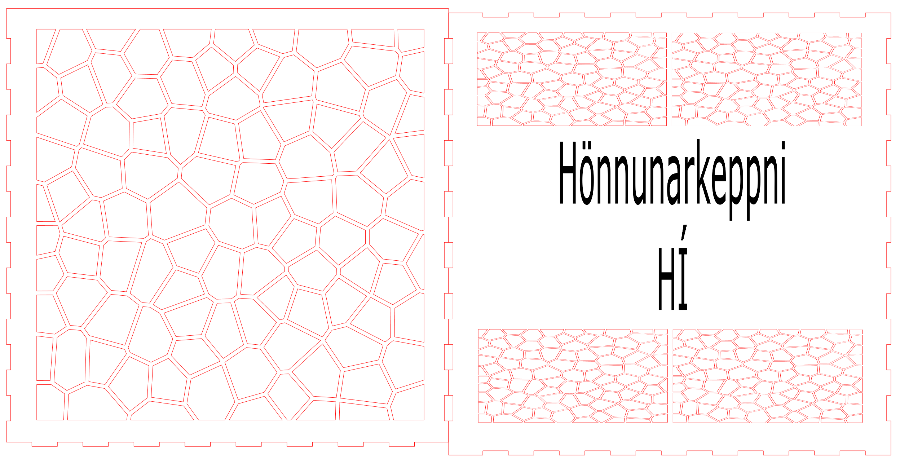
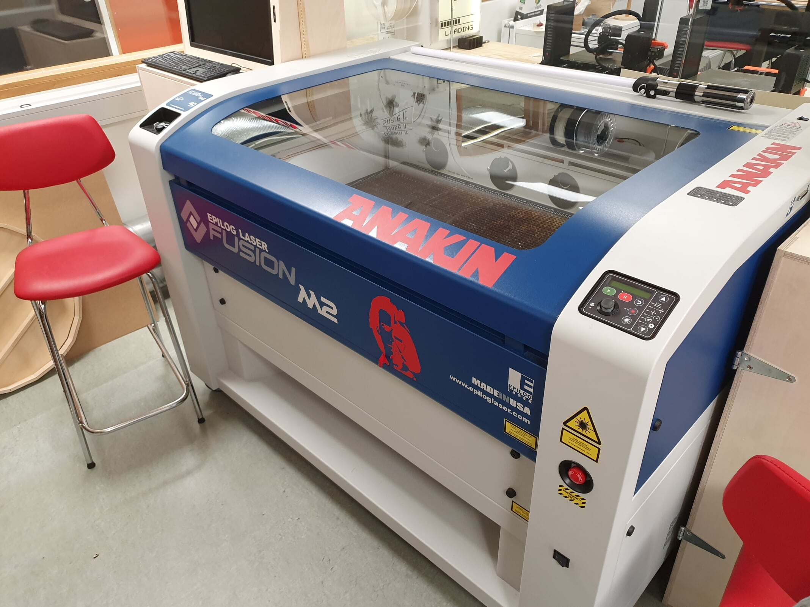
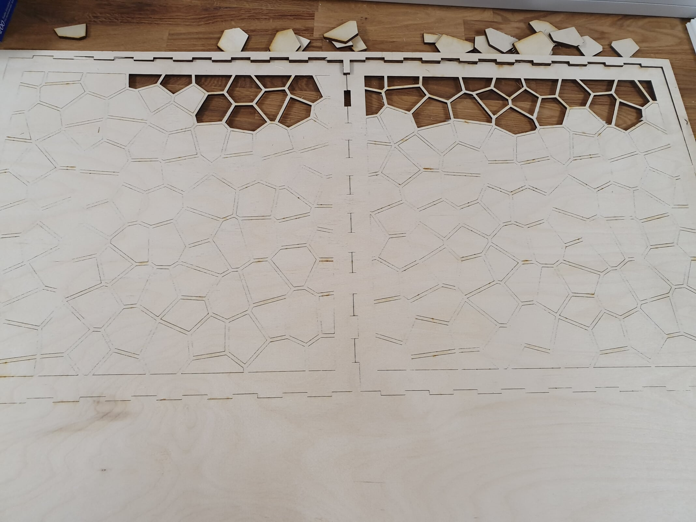
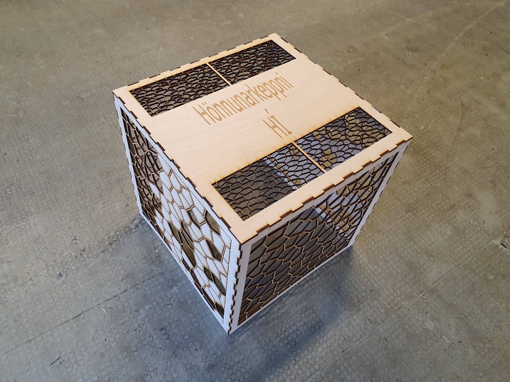

The project was to use a CAD software to build a parametric design of a pressfit construction kit and cut it with a laser cutter.
I decided to use this project to make a box that had internal dimensions of 401 mm on all sides. I then used the box as an measuring device for a robot competition I was organizing where the maximum size of the robots was 40 cm on all sides. I used a tutorial on youtube to guide me in the design of the box. Fusion 360 from Autodesk was used in the tutorial, so I used that as well.
First I defined the parameters as is shown below. I defined them in Icelandic.

Then I started to draw the box with those parameters. Since I needed a surtain internal dimensions I defined the dimension I needed and then added the thickness of the material used, which was 4 mm. So for example I defined the length of the box as Lengd (length) + Þykkt (thickness).
Then I started to draw the fingers for the joints.

Then I used the rectangular pattern command to make the rest of the fingers for that side.

Then I drew the next side and then used the combine command to use the fingers of the first side to cut the fingers into the 2nd plate.

And similarly I made the rest of the box as the render shows.

Then I exported each side as dxf files and meant to import it into Inkscape to process it for the laser cutting but Inkscape didn’t accept the dxf files. Therefore I downloaded QCad and used that to change the dxf files to svg format. QCad added a few lines into the sketches but it was easy to remove them in Inkscape.
Since the box was so big I could only fit two sides on the plates I used to cut it from. So in Inkscape I put two sides together in twice and then the fifth side was alone. I wanted to make the box see through so I googled patterns to cut out of the wood. I eventually found a so called Voronoi pattern which I imported and used on all sides. Also I wrote “Hönnunarkeppni HÍ” on the top side of the box which is the name of the competition I made the box for. The laser cutter then rastered that into the wood.
Below is a snap shot of the pdf file for the top and front side of the box.

The box didn’t end up being a pressure fit. That was because in the drawing the fingers and the slots for the fingers were the exact same size and since the laser cutter cuts away about 0,02 mm of material, that meant that the slots were slightly bigger than the fingers. This could have been fixed for example in Inkscape by widening the fingers by offsetting the appropriate lines.
This is the laser cutter I used.

I used 4 mm wood to make the box and the settings for that material and this laser cutter were:
Raster settings:
-Speed: 60%
-Power: 100%
Vector settings:
-Speed: 5%
-Power: 100%
-Freq: 10
I encountered a problem when cutting the right and left sides of the box. The plate I cut them from was warped so the laser didnt cut the whole way through so I had to manually finish the job myself. Like the picture below shows that was quite the task and I didn't cut all the little pieces out.

So here is the final product. I am very pleased with the outcome and the mishap with the right and left sides actually made it look even better.

All the files I used to create the box can be downloded
here
Links to the tutorials I used and the voronoi pattern can be found below.